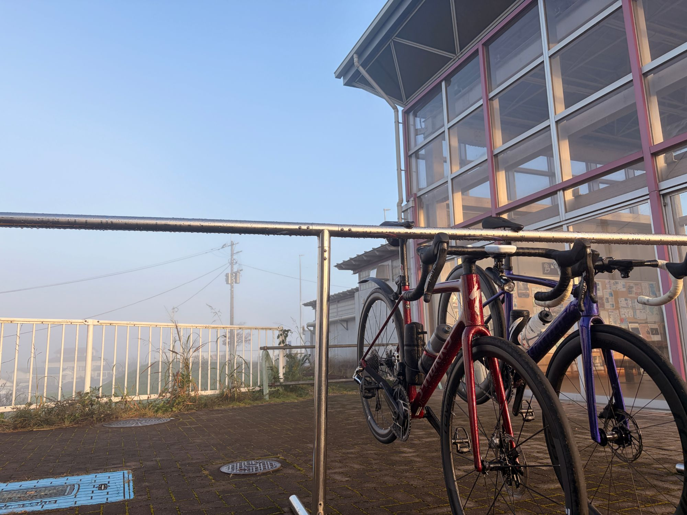
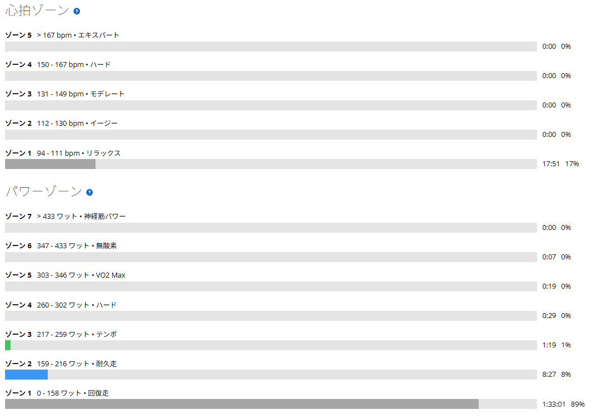

高強度の翌日は、友人と渡良瀬遊水地へ。数字を追わない38km
昨日はローラーでSST20分×3本。前日は高い出力で3本を揃えられた。しかも以前より余裕があった。だからといって、翌日も踏んでいいという話にはならない。
今日は友人と渡良瀬遊水地へ。最初から回復走のつもりで、出力は上げずにのんびり走ってきた。

朝の空気と、いつもの話
気温はGarminの記録で最低7℃、平均9℃。朝はさすがに冷える時期になった。友人とは、いつものように近況や仕事の話をした。何か特別なことがあったわけではない。自転車に乗りながら、最近どうしているかを話す。それだけの時間が、案外いい。
富士ヒルのゴールドを目指していると、ついワット数や練習時間ばかり見てしまう。でも、こういうライドも、私にとってはロードバイクに乗る大事な理由のひとつである。
約38km・NP110W・TSS25
- 全体38.30km / 1時間43分43秒（経過2時間05分02秒）/ 平均22.2km/h / 獲得標高46m
- 負荷平均94W / NP110W / IF0.381 / TSS25.0 / FTP設定289W
- 心拍・回転平均87bpm / 最大105bpm / 平均75rpm

1時間40分以上走ってTSSは25。昨日のSSTが116.4だったことを考えると、負荷の違いははっきりしている。6月に同じ渡良瀬へ友人と回復走に行ったときは、TSS83.6で「回復とは」と書いた。今日は、ちゃんと回復走だった。
速く走らない日も、自転車は楽しい
毎回頑張るより、目的に応じて強度を変えるほうが練習として筋が通っている。実際の回復具合は、この先の脚の感覚や高強度での走りで判断したい。
それにしても今日は、友人と話しているうちに距離が伸びたような感覚だった。数字を気にしないで走る時間があるからこそ、数字を追う練習も続けられるのかもしれない。とりあえず今日の結論はシンプルである。速く走らない日も、自転車は楽しい。